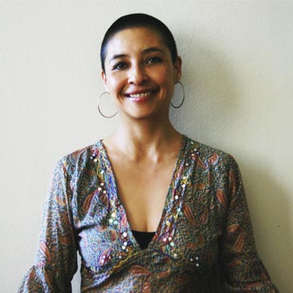

Ana Manríquez Kajisa
Ex bailarina del “Ballet de Santiago” del Teatro Municipal, donde se desempeñó por más de diez años. Actriz profesional, formada en la Escuela de Teatro de Fernando González. Ha participado en obras como: “La lluvia de verano” (Aliochade la Sotta), “Los ojos rotos” (María Izquierdo), “Juegos a la hora de la siesta” (Felipe Hurtado), “Only You”, “9:45” (Iván Rojas Carvacho), entre otras.
Estudia Danza Contemporánea e integra la compañía de José Vidal desde el año 2000 al 2014. Participa en diferentes montajes, como: “Pichanga”, “Tifgang” (José Vidal), “Sujetal-Tac” (Compañía Movimiento), “Mujercitas, módulo 1” y “Tacoaguja” (Compañía Tacoaguja), “Lo Privado” (Compañía El Circo Virtual), “Loop.3”, “Tramas coreográficas”, “Inventario.4”, “DOSMILDOCE” (José Vidal), entre otras.
Licenciada y titulada en Danza, con Mención en Coreografía y Licenciada en Artes de la representación y titulada como actriz. Actualmente se desempeña como directora de experiencias escénicas y docente en Universidad de las Américas desde el año 2006, realizando además, clases
particulares de Ballet Consciente. Ha impartido clases desde el año 1999 en diferentes establecimientos tales como: Estudio Degas, Club de Teatro de Fernando González, Teatro La Matriz, Universidad de las Américas, Universidad de Chile, Universidad del Desarrollo, Centro Cultural Gabriela Mistral, entre otros.